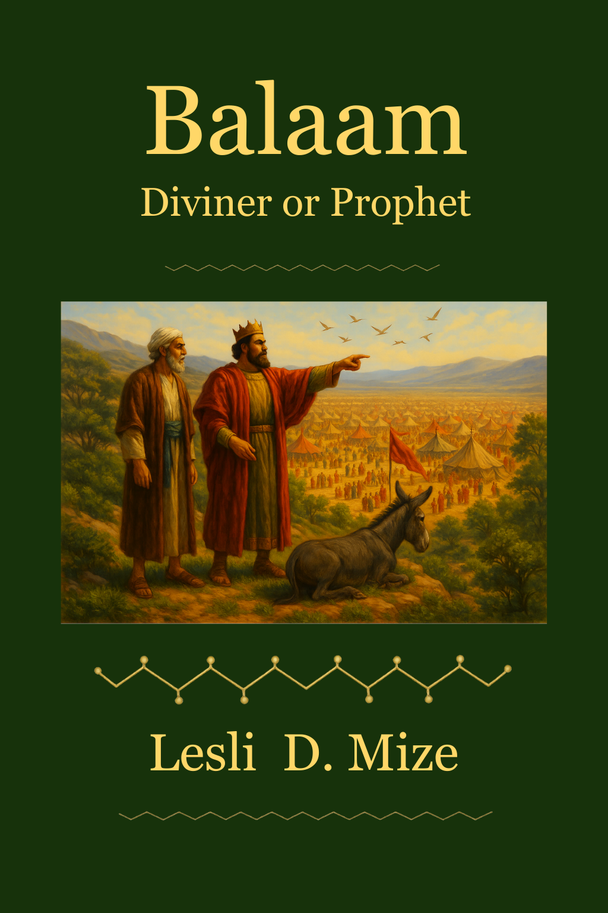

The Story of Balaam
Walk through Balaam’s story with biblical clarity and discernment, exposing the danger of spiritual compromise and the unwavering sovereignty of God.
- Biblical study on discernment and obedience
- Exposes the danger of spiritual compromise
- Rooted in Numbers 22–31
The Story of Balaam
A sobering story on compromise, deception, and the sovereignty of God.

Be Like Habakkuk
When life doesn’t make sense and God feels silent, Habakkuk shows you how to bring honest questions to the Lord—and come away with unshakable faith.
- A Bible story on trusting God in hard seasons
- Strengthens faith while you wait for answers
- Rooted in the Book of Habakkuk